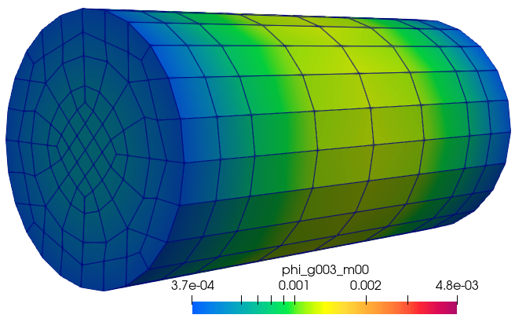
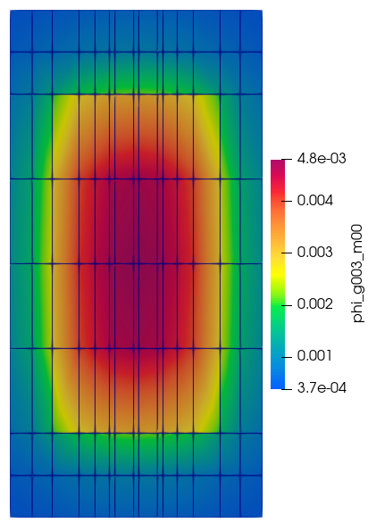

4.1.7. Exporting Flux Moments and Angular Fluxes
This tutorial builds an extruded Cf-252 source, solves a 30-group fixed-source problem, and demonstrates OpenSn’s HDF5 transport-state export methods.
4.1.7.1. Extrude the source cross section
The input Gmsh mesh represents concentric Cf-252 and stainless-steel regions. It is extruded through a 0.2 cm lower cap, a 0.8 cm active source, and a 0.2 cm upper cap. A cylindrical logical volume assigns the active source block without changing the exterior steel casing.
[ ]:
from pathlib import Path
import numpy as np
from mpi4py import MPI
from pyopensn.aquad import GLCProductQuadrature3DXYZ
from pyopensn.context import Finalize
from pyopensn.logvol import RCCLogicalVolume
from pyopensn.mesh import ExtruderMeshGenerator, FromFileMeshGenerator, PETScGraphPartitioner
from pyopensn.solver import DiscreteOrdinatesProblem, SteadyStateSourceSolver
from pyopensn.source import VolumetricSource
from pyopensn.xs import MultiGroupXS
rank = MPI.COMM_WORLD.rank
mesh_generator = ExtruderMeshGenerator(
inputs=[FromFileMeshGenerator(filename="cf252_source.msh")],
layers=[
{"z": 0.2, "n": 2},
{"z": 1.0, "n": 4},
{"z": 1.2, "n": 2},
],
partitioner=PETScGraphPartitioner(),
)
mesh = mesh_generator.Execute()
mesh.SetUniformBoundaryID("boundary")
mesh.SetUniformBlockID(1)
source_region = RCCLogicalVolume(
r=0.2, x0=3.0, y0=3.0, z0=0.2, vx=0.0, vy=0.0, vz=0.8
)
mesh.SetBlockIDFromLogicalVolume(source_region, 2, True)
4.1.7.2. Define the LANL30 materials and Cf-252 spectrum
The source spectrum is a Watt distribution integrated over the LANL30 group widths and normalized to one neutron per second. Dividing by the modeled active-source volume converts it to a volumetric source density.
[ ]:
library_dir = Path("../../modeling/groupsets/LANL30/OpenMC")
xs_steel = MultiGroupXS()
xs_steel.LoadFromOpenMC(str(library_dir / "SS_316.h5"), "set1", 294.0)
xs_cf252 = MultiGroupXS()
xs_cf252.LoadFromOpenMC(str(library_dir / "Cf252.h5"), "set1", 294.0)
group_edges = np.flip(np.array([
1.39000e-10, 1.52000e-7, 4.14000e-7, 1.13000e-6, 3.06000e-6,
8.32000e-6, 2.26000e-5, 6.14000e-5, 1.67000e-4, 4.54000e-4,
1.23500e-3, 3.35000e-3, 9.12000e-3, 2.48000e-2, 6.76000e-2,
1.84000e-1, 3.03000e-1, 5.00000e-1, 8.23000e-1, 1.35300,
1.73800, 2.23200, 2.86500, 3.68000, 6.07000, 7.79000,
10.0000, 12.0000, 13.5000, 15.0000, 17.0000,
]))
group_widths = -np.diff(group_edges)
group_midpoints = 0.5 * (group_edges[:-1] + group_edges[1:])
watt_density = np.exp(-group_midpoints / 1.174) * np.sinh(
np.sqrt(1.043 * group_midpoints)
)
group_spectrum = watt_density * group_widths
group_spectrum /= group_spectrum.sum()
source_volume = mesh.ComputeVolumePerBlockID()[2]
source_strength = (group_spectrum / source_volume).tolist()
integrated_source = source_volume * np.sum(source_strength)
assert np.isclose(integrated_source, 1.0, rtol=0.0, atol=1.0e-12)
4.1.7.3. Solve while retaining angular flux
Flux moments are retained by every LBS problem. Full angular-flux export additionally requires save_angular_flux=True. The modest mesh and quadrature used here keep the tutorial suitable for routine execution; production studies should refine both.
[ ]:
num_groups = len(group_spectrum)
quadrature = GLCProductQuadrature3DXYZ(
n_polar=16, n_azimuthal=16, scattering_order=1
)
problem = DiscreteOrdinatesProblem(
mesh=mesh,
num_groups=num_groups,
groupsets=[
{
"groups_from_to": (0, num_groups - 1),
"angular_quadrature": quadrature,
"angle_aggregation_type": "single",
"inner_linear_method": "classic_richardson",
"l_abs_tol": 1.0e-8,
"l_max_its": 300,
}
],
xs_map=[
{"block_ids": [1], "xs": xs_steel},
{"block_ids": [2], "xs": xs_cf252},
],
volumetric_sources=[
VolumetricSource(block_ids=[2], group_strength=source_strength)
],
boundary_conditions=[{"name": "boundary", "type": "vacuum"}],
options={
"save_angular_flux": True,
"use_precursors": False,
"verbose_inner_iterations": False,
"verbose_outer_iterations": False,
},
)
solver = SteadyStateSourceSolver(problem=problem)
solver.Initialize()
solver.Execute()
leakage = problem.ComputeLeakage(["boundary"])
total_leakage = float(np.sum(leakage["boundary"]))
if rank == 0:
print(f"Cf-252 spectrum normalization={group_spectrum.sum():.8e}")
print(f"Cf-252 total leakage={total_leakage:.8e}")
assert abs(group_spectrum.sum() - 1.0) < 1.0e-12
assert total_leakage > 0.0
4.1.7.4. Export the transport solution
Set export_data=True to write the scalar-flux moments and the full volume angular flux. These files can be large, so export is disabled during the regression test. Each MPI rank writes its own file using the supplied basename.
[ ]:
export_data = False
if export_data:
output_dir = Path("cf252_flux_data")
if rank == 0:
output_dir.mkdir(exist_ok=True)
MPI.COMM_WORLD.Barrier()
problem.WriteFluxMoments(file_base=str(output_dir / "flux_moments"))
problem.WriteAngularFluxes(file_base=str(output_dir / "angular_flux"))
if "opensn_console" not in globals():
from IPython import get_ipython
if get_ipython() is not None:
Finalize()
MPI.Finalize()


Figure: Scalar flux in energy group 3.